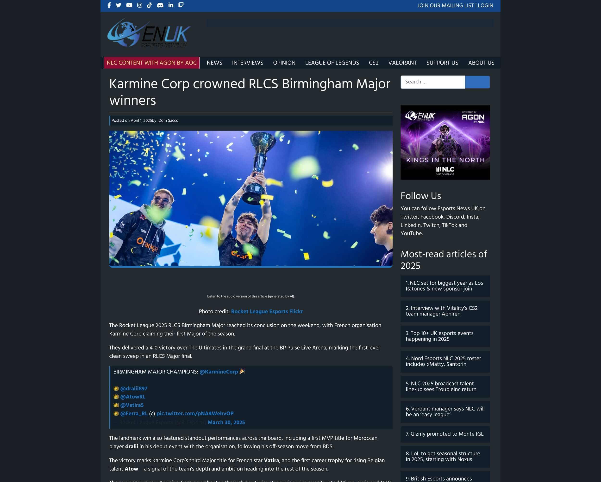
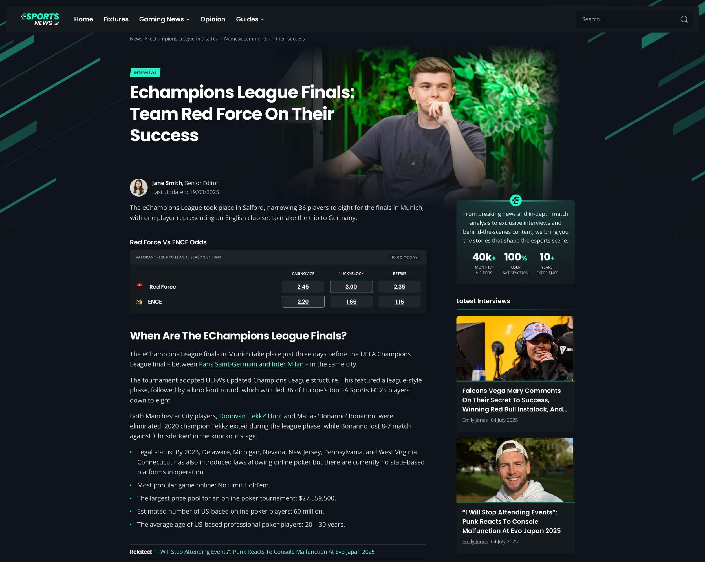

Esports Odds Comparison Platform
Redesigning a news site into a live fixtures and odds platform, with a design system built to make betting links clear and trustworthy.
![[image showing side-by-side desktop view of the original news site vs. the new dual-purpose platform featuring live odds integration, news feeds, and comparison modules]](images/esports/hero.jpg)
Product Designer (me), Junior Designer, Engineer
Figma, Tokens
11 Weeks
The Challenge
I led end-to-end design for the redesign that turned a news-only site into a destination for tournaments, fixtures and odds comparison, including research, flows, branding and UI. This case study focuses on the design system. The business model shifted from advertising to bookmaker referrals, making odds and betting links central to revenue. I built a design system that made them clear, trustworthy and easy to act on, while keeping the product consistent as it grew.
I paired with the junior designer on article components and news layouts, reviewed their work against the system, and walked them through the token structure so they could extend it without me.

Original Article

News Article
- No components for odds or fixtures. Match cards, odds cells and markets didn't exist, so every new feature meant building from scratch.
- Accessibility issues. Low-contrast text on dark layouts or over images failed WCAG.
- Inconsistent layouts. Page templates varied across the site, with no shared structure for content.
- A dated look for the sector. The redesign moved to a modern, dark-first interface that suits the sector and builds trust with bettors.
![[image showing detailed UI breakdown of a match center page with tabbed odds comparison tables]](images/esports/image-06.jpg)
Match Center & Odds Comparison
![[image showing contextual odds widget embedded within an editorial preview article]](images/esports/image-07.jpg)
Contextual Match Odds when relevant
![[image showing contextual odds widget embedded within an editorial preview article]](images/esports/image-011.jpg)
Match Center
Token Structure
I worked with the engineer on component naming and token names so Figma matched the code. We reviewed components together in Figma before handoff, which cut back-and-forth.
- Global tokens: Raw values with no meaning attached: teal-500, a 4px base unit with an 8px rhythm, and the typography scale.
- Semantic tokens: Assign meaning to global values, e.g. bg-surface-primary → charcoal-900
![[image showing component library with dark mode tokens, odds comparison tables, live score badges, and typography scales]](images/esports/image-02.jpg)
![[image showing component library with dark mode tokens, odds comparison tables, live score badges, and typography scales]](images/esports/image-03.jpg)
Components never reference raw values, so a brand or accessibility change, like adjusting a grey to pass contrast, is made once and flows through every component.
I considered a third “component” token layer (e.g. odds-cell-bg), but with a team of three it would have added maintenance for little gain. Two layers kept the system easy to learn and fast to update. I deliberately held back light mode for this phase to prioritise the odds and fixtures journey, and logged it as a later addition.
![[image showing component library with dark mode tokens, odds comparison tables, live score badges, and typography scales]](images/esports/image-05.jpg)
Spacing & Sizing
Everything snaps to a 4px base unit. Dense elements like odds cells, badges and icon padding use 4px steps, while layout spacing and card padding sit on an 8px rhythm. Icons (16/20/24) and tap targets (40/48) follow the same scale.
![[image showing component library with dark mode tokens, odds comparison tables, live score badges, and typography scales]](images/esports/image-04.jpg)
Component System
![[image showing component library with dark mode tokens, odds comparison tables, live score badges, and typography scales]](images/esports/image-012.jpg)
- News meets odds: One odds module that sits inside articles, so users can move from reading to comparing without leaving the page.
- Built from nested components: Icons, labels, logos and badges are built once as atoms and nested inside larger components. The odds cell sits inside the match card, which sits inside the fixtures list and article modules, so one update reaches every instance.
- Odds comparison: A reusable match card, odds cell and collapsible market accordions. A highlighted "best price" state lets users spot the top odds at a glance, and accordions keep dense match pages scannable.
- Live coverage hubs: Modular scorecards and tournament brackets built with auto-layout.
- Responsible gambling built in: A persistent footer with 18+, GambleAware and GamCare, plus a reusable odds disclaimer, so compliance is never forgotten on new pages.
Results & Impact
I documented each component with usage rules and states, and ran component requests through a dedicated Slack channel, so the system could grow without breaking consistency.
- Faster handoff: Handoff got noticeably faster once the system was in place. New features like tournament hubs and markets could be assembled from existing components, so there was far less back-and-forth than before.
- WCAG AAA contrast across core article templates, with zero failures in testing.
- One consistent platform experience for a site built to serve 50k+ monthly readers.